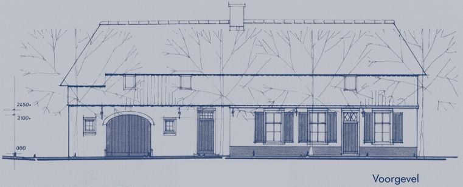
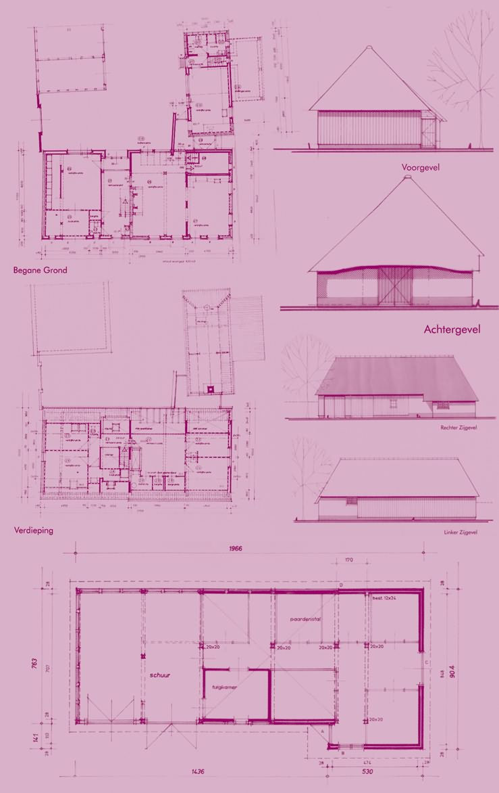

{kind=link}
{kind=link}
| Winnaar categorie:
|
|
Hilvarenbeek Het plan heeft een landelijke en cultuurhistorische
waarde omdat het een goed voorbeeld is van een woon-stal huis. Bovendien
vormt het met de architectonisch waardevolle bijgebouwen en erfbeplanting
een karakteristiek geheel. Het object maakt onderdeel uit van een
waardevol gebied ten westen van Hilvarenbeek met lintbebouwing van
boerderijen te midden van oude akkerbodems. De kapschuur is opgebouwd uit eiken gebinten met eenvoudige houten spanten. De sporenkap is met riet gedekt en is in een slechte staat. De wandconstructie met een verticaal houten beschot staat op een sterk verweerde plint van metselwerk. De kapschuur wordt gerestaureerd op basis van de bestaande constructie en met gebruikmaking van bestaande bruikbare onderdelen. Een gedeelte van de aanwezige varkenstal wordt in het plan geïntegreerd in de hoofdmassa van de bestaande schuur, waardoor een meer oorspronkelijke massaverhouding ontstaat en de kapschuur opnieuw een sterk element wordt in het gebouwde ensemble rondom het erf. |
|
| meer informatie |
|  | |
|  | |
{kind=link}
{kind=link}